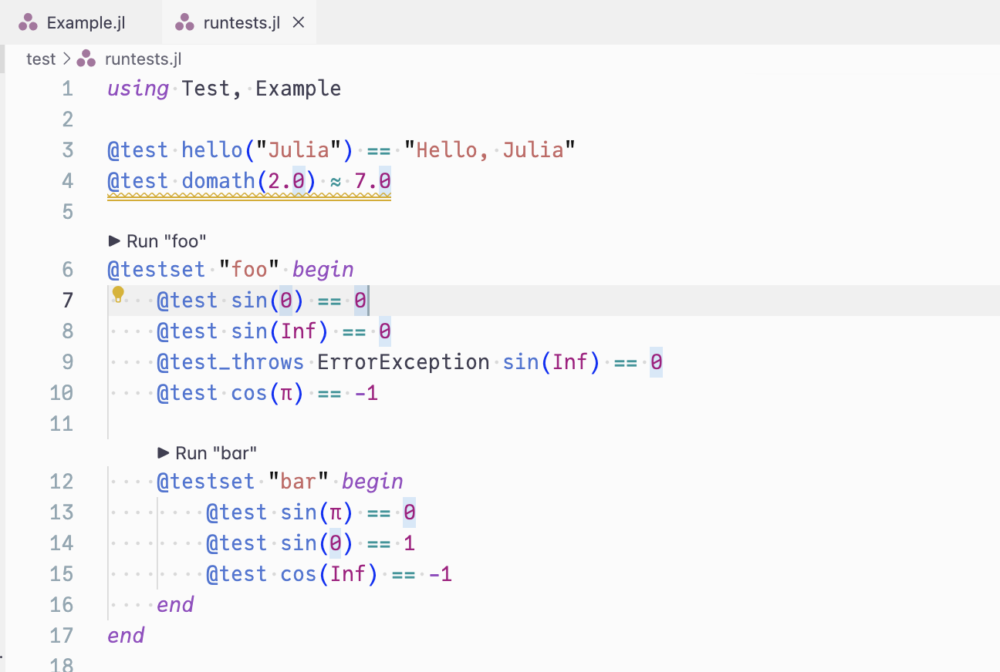
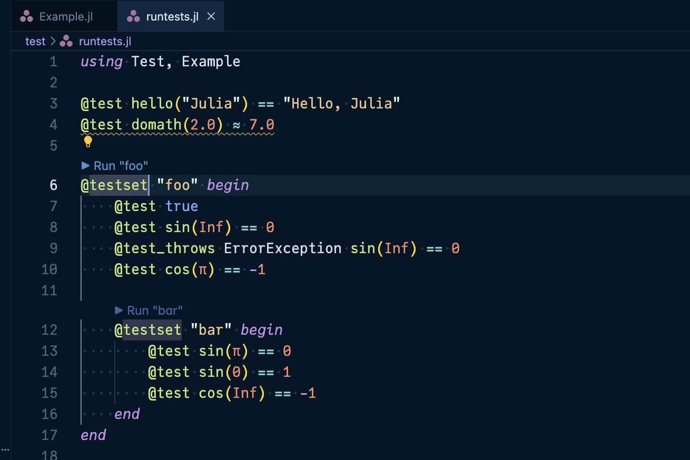
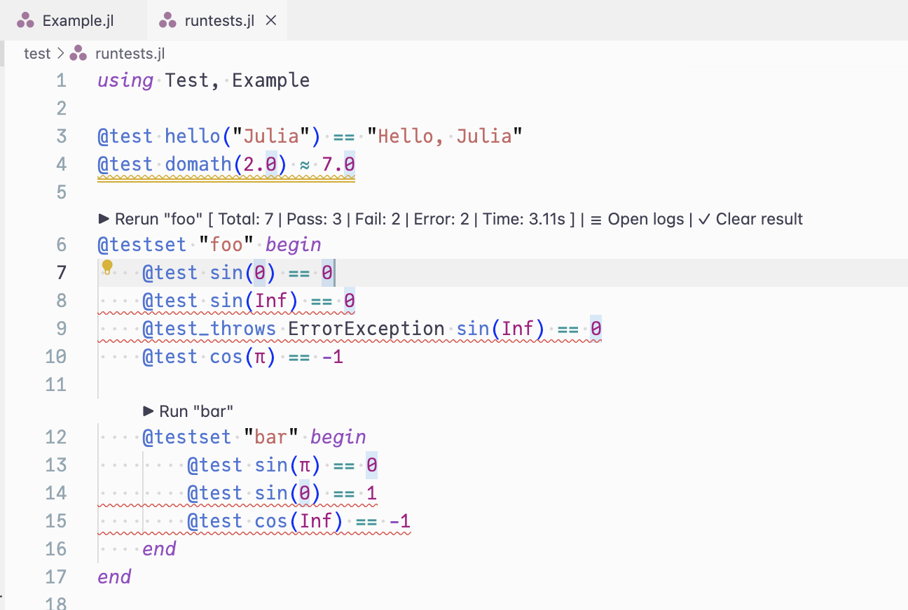
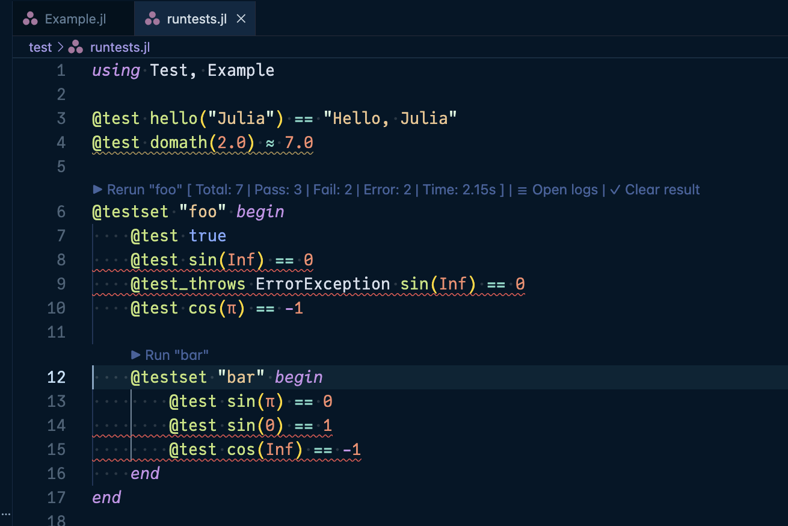
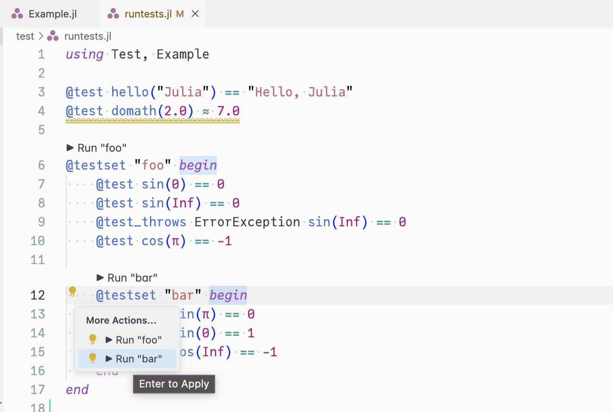
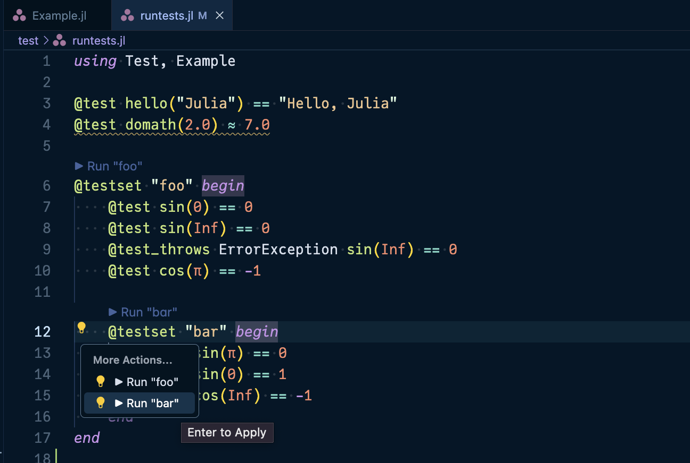
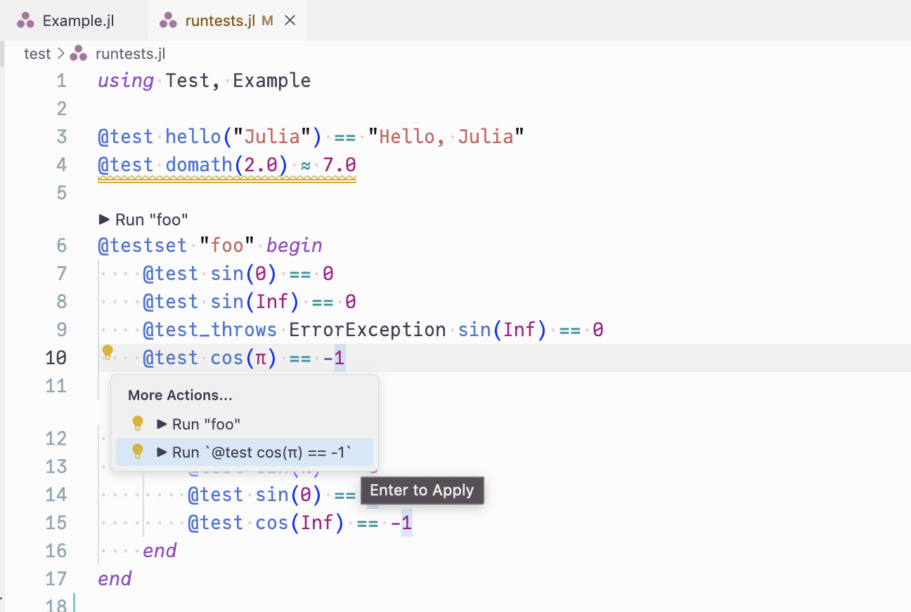
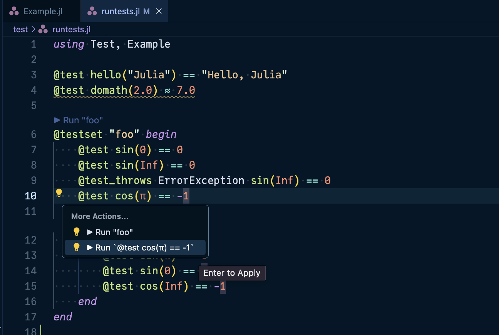
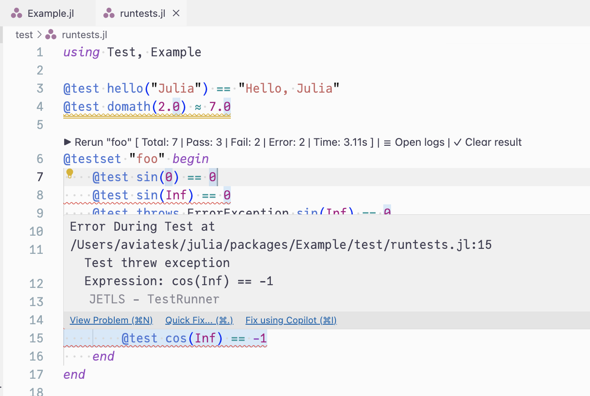
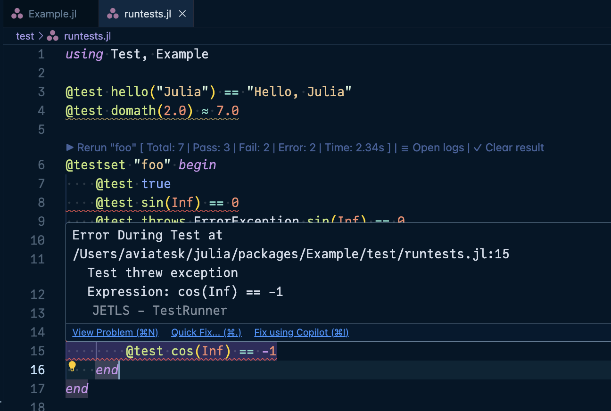

TestRunner integration
JETLS integrates with TestRunner.jl to provide an enhanced testing experience directly within your editor. This feature allows you to run individual @testset blocks directly from your development environment.
Prerequisites
To use this feature, you need to install the testrunner executable:
julia -e 'using Pkg; Pkg.Apps.add(url="https://github.com/aviatesk/TestRunner.jl#release")'Note that you need to manually make ~/.julia/bin available on the PATH environment for the testrunner executable to be accessible. See https://pkgdocs.julialang.org/dev/apps/ for the details.
Features
Code lens
When you open a Julia file containing @testset blocks, JETLS displays interactive code lenses above each @testset:
 
▶ Run "testset_name": Run the testset for the first time
After running tests, the code lens is refreshed as follows:
 
▶ Rerun "testset_name" [summary]: Re-run a testset that has previous results☰ Open logs: View the detailed test output in a new editor tab✓ Clear result: Remove the test results and inline diagnostics
Code actions
You can trigger test runs via "code actions" that are explicitly requested by the user:
 
- Inside a
@testsetblock: Run the entire testset
 
- On an individual
@testmacro: Run just that specific test case
Note that when running individual @test cases, the error results are displayed as temporary diagnostics for 10 seconds. Click ☰ Open logs button in the pop up message to view detailed error messages that persist.
Test diagnostics
Failed tests are displayed as diagnostics (red squiggly lines) at the exact lines where the failures occurred, making it easy to identify and fix issues:
 
Progress notifications
For clients that support work done progress, JETLS shows progress notifications while tests are running, keeping you informed about long-running test suites.
Supported patterns
The TestRunner integration supports:
Named
@testsetblocks (via code lens or code actions):using Test # supported: named `@testset` @testset "foo" begin @test sin(0) == 0 @test sin(Inf) == 0 @test_throws ErrorException sin(Inf) == 0 @test cos(π) == -1 # supported: nested named `@testset` @testset "bar" begin @test sin(π) == 0 @test sin(0) == 1 @test cos(Inf) == -1 end end # unsupported: `@testset` inside function definition function test_func1() @testset "inside function" begin @test true end end # supported: this pattern is fine function test_func2() @testset "inside function" begin @test true end end @testset "test_func2" test_func2()Individual
@testmacros (via code actions only):# Run individual tests directly @test 1 + 1 == 2 @test sqrt(4) ≈ 2.0 # Also works inside testsets @testset "math tests" begin @test sin(0) == 0 # Can run just this test @test cos(π) == -1 # Or just this one end # Multi-line `@test` expressions are just fine @test begin x = complex_calculation() validate(x) end # Other Test.jl macros are supported too @test_throws DomainErrors sin(Inf)
See the TestRunner.jl README for more details.
Troubleshooting
If you see an error about testrunner not being found:
- Ensure you've installed TestRunner.jl as described above
- Check that
testrunneris in your systemPATHby runningwhich testrunner: otherwise you may need to add~/.julia/bintoPATH - Restart your editor to ensure it picks up the updated
PATH
Test execution requires that your file is saved and matches the on-disk version. If you see a message asking you to save the file first, make sure to save your changes before running tests.